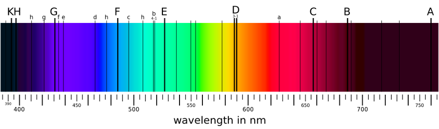

| Element | Spectra images in PNG format |
|---|---|
| Fraunhofer |  |
Fraunhofer's original (1817) designations of absorption lines in the solar spectrum
|
Wavelength (nm) |
Chemical origin |
Colour range |
|
|
A |
759.37 |
atmospheric O2 |
dark red |
|
B |
686.72 |
atmospheric O2 |
red |
|
C |
656.28 |
hydrogen alpha |
red |
|
D1 |
589.59 |
neutral sodium |
red orange |
|
D2 |
589.00 |
neutral sodium |
yellow |
|
E |
526.96 |
neutral iron |
green |
|
F |
486.13 |
hydrogen beta |
cyan |
|
G |
431.42 |
CH molecule |
blue |
|
H |
396.85 |
ionised calcium |
dark violet |
|
K |
393.37 |
ionised calcium |
dark violet |
1 nm = 1 x 10-9 m = 10 A
1 Angstrom = 1x10-10 m = 0.1 nm
759.37 nm = 7593.7 A
Balmer Series
|
Transition of n |
3→2 |
4→2 |
5→2 |
6→2 |
7→2 |
8→2 |
9→2 |
|
|
Name |
H-α |
H-β |
H-γ |
H-δ |
H-ε |
H-ζ |
H-η |
|
|
Wavelength (nm) [2] |
656.3 |
486.1 |
434.1 |
410.2 |
397.0 |
388.9 |
383.5 |
364.6 |
|
Color |
(Ultraviolet) |
(Ultraviolet) |
(Ultraviolet |
Visible wavelengths
The visible spectrum of light from hydrogen displays four wavelengths, 410 nm, 434 nm, 486 nm, and 656 nm